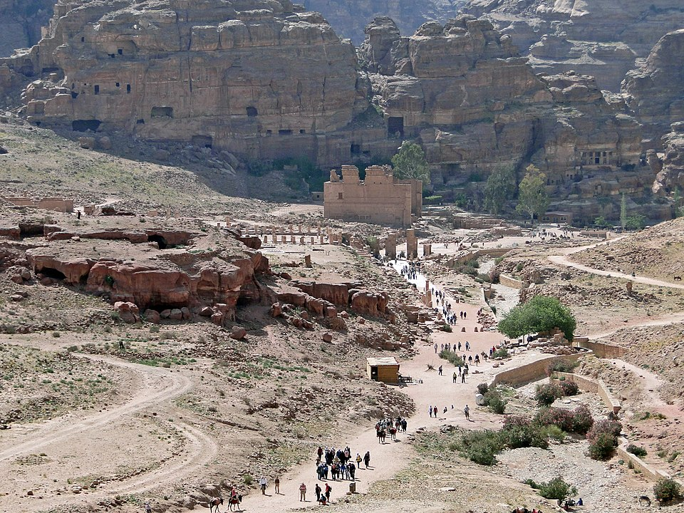
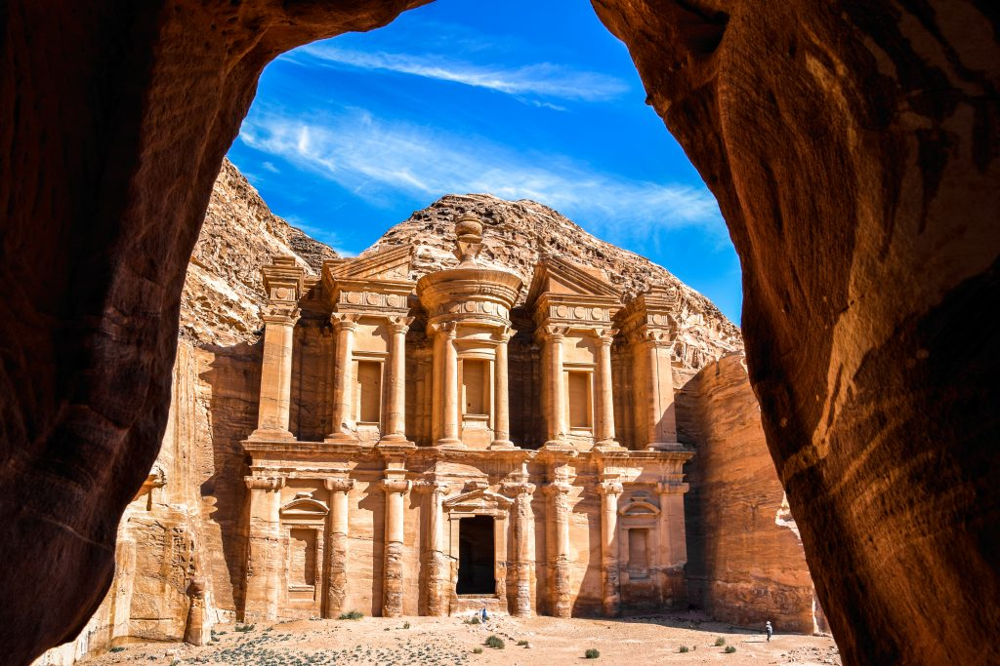
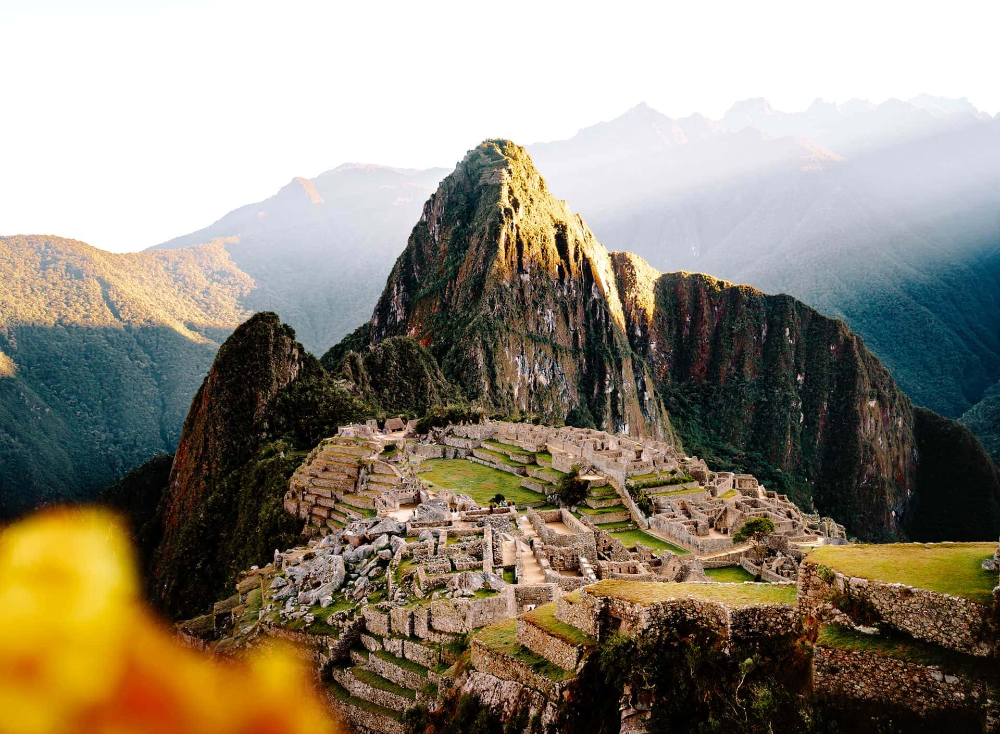
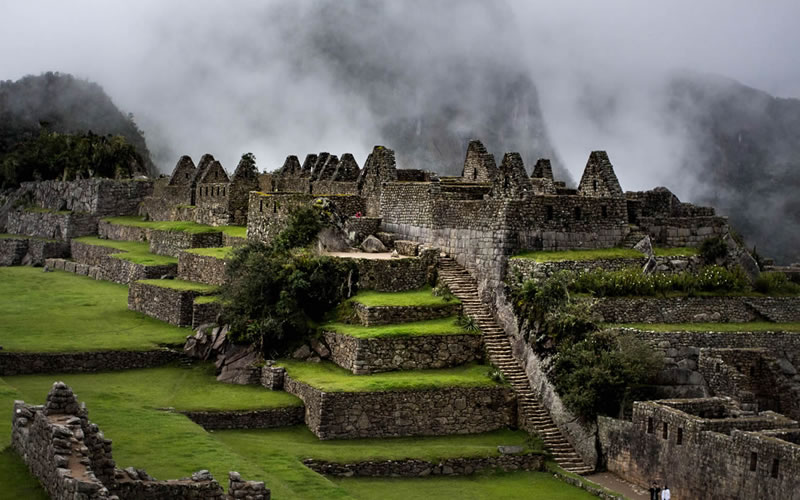
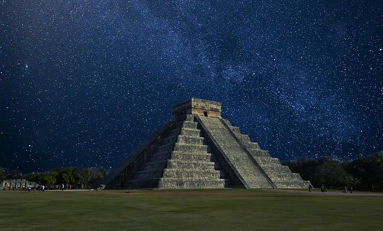
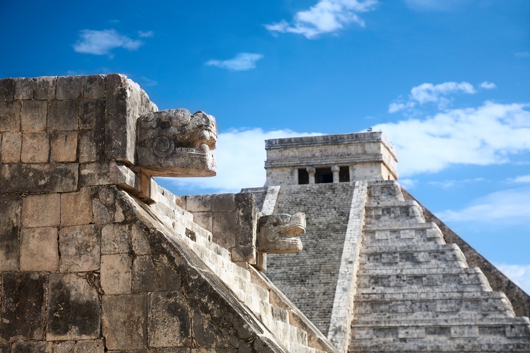
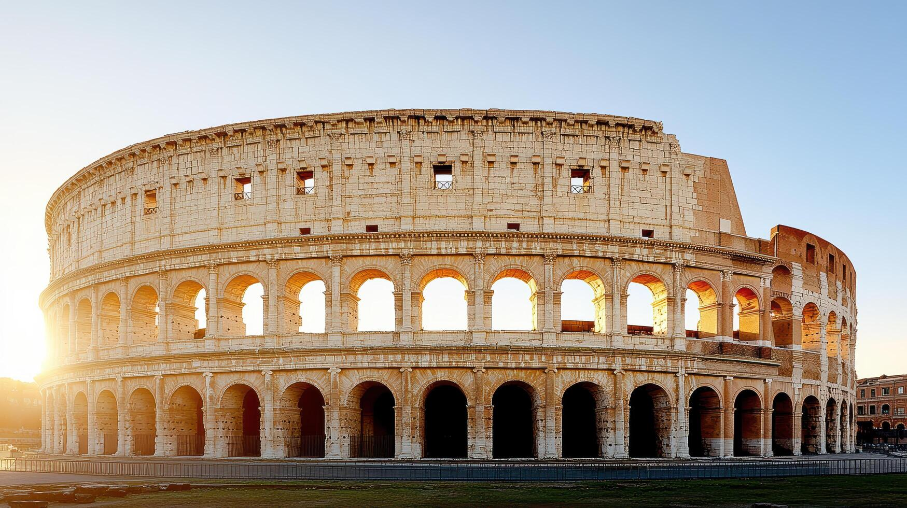
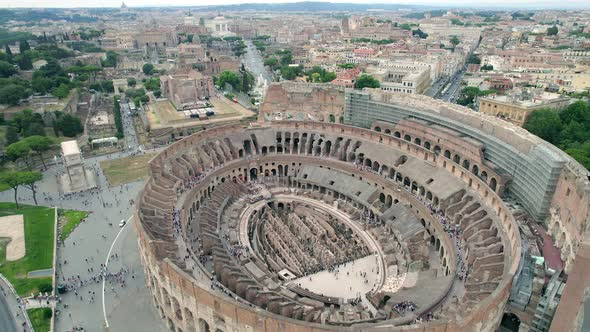

WONDER OF WORLD


The Great Wall of China
The world's longest man‑made structure, a stone dragon winding
across mountains. Click to expand details




Petra
A city carved into the heart of rose‑red mountains, lost for
centuries.Click to expand details


Christ the Redeemer
Iconic Art Deco statue overlooking Rio, arms outstretched.Click to expand details





Machu Picchu
Inca citadel high in the Andes, shrouded in mist.Click to expand details





Chichen Itza
Mayan step pyramid where shadows of serpents descend.Click to expand details




Colosseum
Ancient Roman amphitheater that roared with gladiators.Click to expand details


Taj Mahal
A breathtaking marble monument to eternal love.Click to expand details